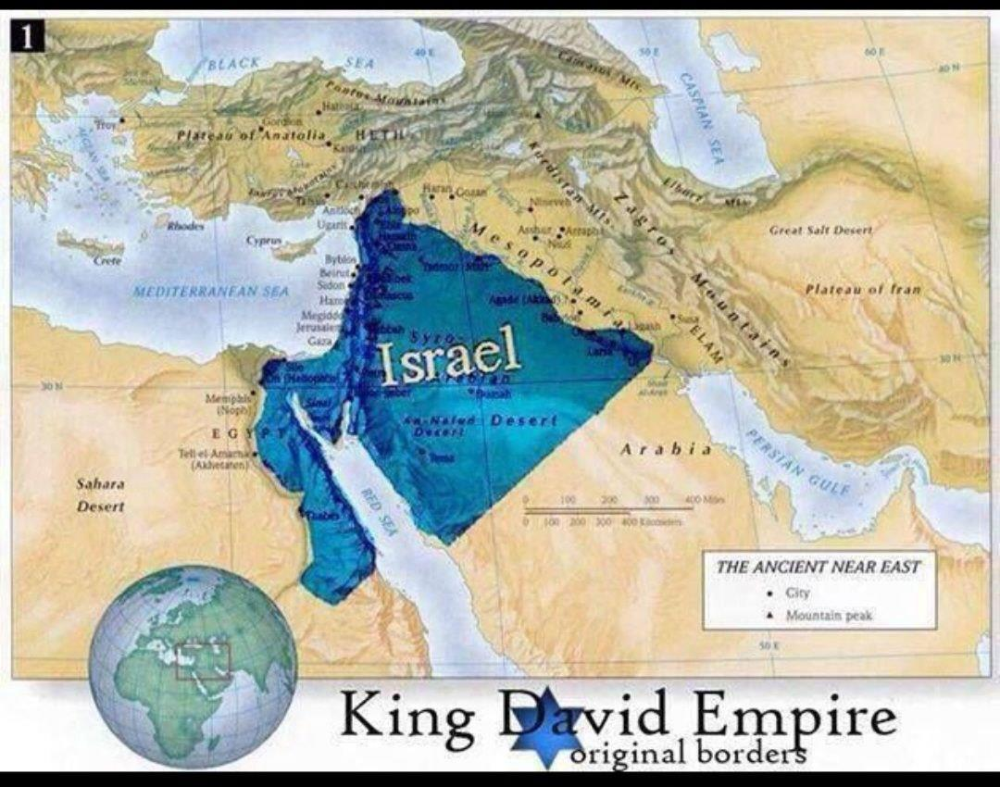
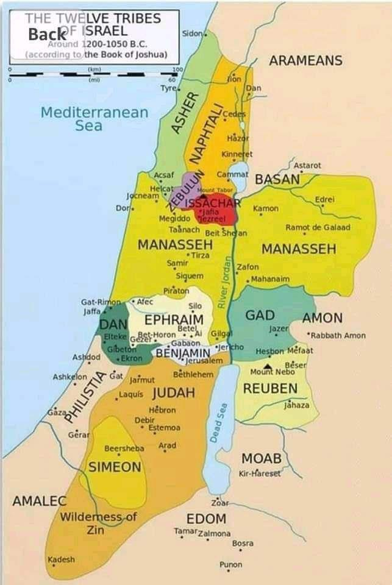
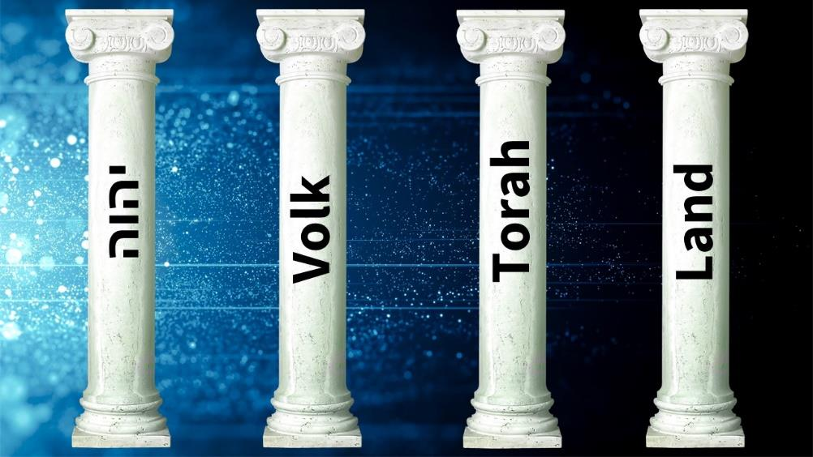

Yisra’el is a people, a person and land!!
People
Shemoth/Exodus 6
6 “Say, therefore, to the children of Yisra’ěl [people], ‘I am יהוה, and I shall bring you out from under the burdens of the Mitsrites, and shall deliver you from their enslaving, and shall redeem you with an outstretched arm, and with great judgments, 7 and shall take you as My people, and I shall be your Elohim. And you shall know that I am יהוה your Elohim who is bringing you out from under the burdens of the Mitsrites. 8 ‘And I shall bring you into the land [eretz] which I swore to give to Avraham, to Yitscḥaq, and to Ya‛aqov, [person] to give it to you as an inheritance. I am יהוה.’”
Bereshit/Genesis 17
7 “And I shall establish My covenant between Me and you and your seed after you in their generations [people], for an everlasting covenant, to be Elohim to you and your seed after you. 8 “And I shall give to you and your seed after you the land [eretz] of your sojournings, all the land of Kena‛an, as an everlasting possession. And I shall be their Elohim.”
Bereshit/Genesis 28
3 “And Ěl Shaddai bless you, and make you fruitful and increase you, and you shall become an assembly of peoples, 4 and give you the blessing of Avraham, to you and your seed with you [people], so that you inherit the land [eretz] of your sojournings, which Elohim gave to Aḇraham.”
Yeshayahu/Isaiah 41
8 “But you, Yisra’ěl, are My servant, Ya‛aqov, whom I have chosen, the descendants of Avraham who loved Me [people]
Yirmeyahu/Jeremiah 31
1 “At that time,” declares יהוה, “I shall be the Elohim of all the clans of Yisra’ěl, and they shall be My people.” 2 Thus said יהוה, “A people escaped from the sword found favour in the wilderness, Yisra’ěl, when it went to find rest.” 3 יהוה appeared to me from afar, saying, “I have loved you with an everlasting love, therefore I shall draw you with loving-commitment. 4 “I am going to build you again. And you shall be rebuilt, O maiden of Yisra’ěl! Again you shall take up your tambourines, and go forth in the dances of those who rejoice.
Romiyim/Romans 11
26 And so all Yisra’ěl [people] shall be saved, as it has been written, “The Deliverer shall come out of Tsiyon, and He shall turn away wickedness from Ya‛aqov
Person
Bereshit/Genesis 32
27 So He asked him, “What is your name?” And he said, “Ya‛aqov.” 28 And He said, “Your name is no longer called Ya‛aqov, but Yisra’ěl [person], because you have striven with Elohim and with men, and have overcome.”
Bereshit/Genesis 35
10 And Elohim said to him, “Your name is Ya‛aqov, your name is no longer called Ya‛aqov, but Yisra’ěl is your name [person].” So He called his name Yisra’ěl.
Land -Eretz Yisra’el
Bereshit/Genesis 15
17 And it came to be, when the sun went down and it was dark, that see, a smoking oven and a burning torch passing between those pieces.
18 On the same day יהוה made a covenant with Avram, saying, “I have given this land to your seed, from the river of Mitsrayim to the great river, the River Euphrates

יהוה cautioned us against making vows or oaths regarding the land of Yisra’el since it serves as His footstool. Additionally, He warned us against making any statements opposing Yerushalayim, as it is the city where the Great King resides.
Mattithyahu/Matthew 5
34 “But I say to you, do not swear [vainly] at all, neither by the heaven, because it is Elohim’s throne; 35 nor by the earth, for it is His footstool; nor by Yerushalayim, for it is the city of the great Sovereign;
Yeshayahu/Isaiah 66
1 Thus said יהוה, “The heavens are My throne, and the earth is My footstool. Where is this house that you build for Me? And where is this place of My rest?
When you engage in the act of cursing and speaking ill of His land, His chosen Yisra’el, and His covenant people, you are essentially inviting curses upon yourself.
If you speak ill of the location where יהוה has designated for His Name to reside eternally, you are disrespecting His Set-Apart/Sacred Name.
It is justifiable to point out the wrongdoings of individuals, but it is incorrect to say that the land does not belong to יהוה.
Claiming that everyone who resides there is a "FAKE Jew" is a false statement.
Be cautious not to confuse the corrupt Illuminati-influenced Yisra’eli government with the ordinary residents of Yisra’el.
The Land remains set-apart, as it is called sacred by יהוה.
Yehezqel/Ezekiel 48
14 Moreover, they shall not sell or exchange any of it, or alienate this choice portion of land; for it is Set-Apart to יהוה.
Vayiqra/Leviticus 25
23 ‘And the land is not to be sold beyond reclaim, for the land is Mine, for you are sojourners and settlers with Me
Vayiqra/Leviticus 27
21 and when it reverts in the jubilee, the field shall be Set-Apart to יהוה, like a field set apart; it shall be for the priest as his property.
Zekaryah/Zechariah 2
12 יהוה will possess Yehudah as His portion in the Set-Apart Land, and will again choose Yerushalayim.
Zekaryah/Zechariah 12
10 “And I shall pour on the house of Dawiḏ and on the inhabitants of Yerushalayim a spirit of favour and prayers. And they shall look on Me whom they pierced, and they shall mourn for Him as one mourns for his only son. And they shall be in bitterness over Him as a bitterness over the first-born.
Yehezqel/Ezekiel 48
1 “And these are the names of the tribes: From the north end along the way to Ḥethlon at the entrance of Ḥamath, to Ḥatsar Ěnan, the border of Dammeseq northward by the side of Ḥamath, from its east to its west side, Dan: one. 2 “And by the border of Dan, from the east side to the west, Ashěr: one. 3 “And by the border of Ashěr, from the east side to the west, Naphtali: one. 4 “And by the border of Naphtali, from the east side to the west, Menashsheh: one. 5 “And by the border of Menashsheh, from the east side to the west, Ephrayim: one. 6 “And by the border of Ephrayim, from the east side to the west, Re’uḇěn: one. 7 “And by the border of Re’uḇěn, from the east side to the west, Yehuḏah: one. 8 “And by the border of Yehuḏah, from the east side to the west, is the contribution which you offer up, twenty-five thousand cubits in width, and in length the same as one of the portions, from the east side to the west, with the set-apart place in its midst. 9 “The contribution that you offer up to יהוה is twenty-five thousand cubits in length and ten thousand in width. 10 “And of these is the set-apart contribution for the priests: on the north twenty-five thousand cubits, and on the west ten thousand in width, and on the east ten thousand in width, and on the south twenty-five thousand in length. And the set-apart place of יהוה shall be in its midst – 11 for the priests of the sons of Tsaḏoq, who are set-apart, who did guard My Charge, who did not go astray when the children of Yisra’ěl went astray, as the Lěwites went astray. 12 “So this contribution shall be to them, from the contribution of the land, a most set-apart place by the border of the Lěwites. 13 “And alongside the border of the priests, the Lěwites have twenty-five thousand cubits in length and ten thousand in width, its entire length is twenty-five thousand and its width ten thousand. 14 “And they do not sell any of it, nor exchange it, nor transfer this best part of the land, for it is set-apart to הוהי. 15 “And the five thousand cubits in width that is left, facing the twenty-five thousand, is for common use by the city, for dwellings and open land. And the city shall be in its midst. 16 “And these are its measurements: the north side four thousand five hundred cubits, and the south side four thousand five hundred, and the east side four thousand five hundred, and the west side four thousand five hundred.
17 “And the open land of the city shall be: to the north two hundred and fifty cubits, and to the south two hundred and fifty, and to the east two hundred and fifty, and to the west two hundred and fifty. 18 “And the rest of the length, alongside the contribution of the set-apart portion, is ten thousand cubits to the east and ten thousand to the west. And it shall be alongside the contribution of the set-apart portion, and its increase shall be food for the workers of the city. 19 “And the workers of the city, from all the tribes of Yisra’ěl, shall till it. 20 “The entire contribution is twenty-five thousand cubits by twenty-five thousand cubits, foursquare. You are to offer up the set-apart contribution with the possession of the city. 21 “And the rest is for the prince, on one side and on the other of the set-apart contribution and of the possession of the city, facing the twenty-five thousand cubits of the set-apart contribution as far as the eastern border, and westward facing the twenty-five thousand as far as the western border, alongside the portions of the prince. And the set-apart contribution, and the set-apart place of the House shall be in its midst. 22 “So the possession of the Lěwites and the possession of the city are in the midst of what belongs to the prince – between the border of Yehuḏah and the border of Binyamin, it belongs to the prince. 23 “As for the rest of the tribes, from the east side to the west side, Binyamin: one. 24 “And by the border of Binyamin, from the east side to the west side, Shim‛on: one. 25 “And by the border of Shim‛on, from the east side to the west side, Yissasḵar: one. 26 “And by the border of Yissasḵar, from the east side to the west side, Zeḇulun: one. 27 “And by the border of Zeḇulun, from the east side to the west side, Gaḏ: one. 28 “And by the border of Gaḏ, on the south side toward the South, the border shall be from Tamar to the waters of Meriḇah by Qaḏěsh, along the Wadi to the Great Sea. 29 “This is the land which you divide by lot as an inheritance among the tribes of Yisra’ěl, and these are their portions,” declares the Master יהוה.
Shemu’el Bet/2Samuel 21
14 and buried the bones of Sha’ul and Yehonathan his son in the land of Binyamin in Tsela, in the burial-site of Qish his father, and did all that the sovereign commanded. And after that Elohim heard prayer for the land [eretz].

In Scripture, it is mentioned seven times that Yerushalayim is the chosen location where יהוה’s Name will forever be established.
Melakim Aleph/1 Kings 11
36 And unto his son will I give one tribe, that David my servant may have a light always before me in YERUSHALAYIM, the city which I have chosen me to put MY NAME there.
Melakim Bet/2 Kings 21
4 And he built altars in the house of יהוה, of which יהוה said, in YERUSHALAYIM will I put MY NAME.
Melakim Bet/2 Kings 21
7 And he set a graven image of the grove that he had made in the house, of which יהוה said to David, and to Solomon his son, in this house, and in YERUSHALAYIM, which I have chosen out of all Tribes of Yisra’el, will I put MY NAME FOREVER.
Melakim Bet/2 Kings 23
27 And יהוה said, I will remove Yehudah (Judah) also out of my sight, as I have removed Yisra’el, and will cast off this city YERUSHALAYIM which I have chosen, and the house of which I said, MY NAME shall be there.
Dibre Ha Yamim Bet/2 Chronicles 6
6 But I have chosen YERUSHALAYIM, MY NAME might be there; and have chosen David to be over my people Yisra’el.
Dibre Ha Yamim Bet/2 Chronicles 33
4 Also he built altars in the house of יהוה, whereof יהוה had said, in YERUSHALAYIM shall MY NAME be FOREVER.
Dibre Ha Yamim Bet/2 Chronicles 33
7 And he set a carved image, the idol which he had made, in the house of Elohiym, of which Elohiym had said to David and to Solomon his son, in this house, and in YERUSHALAYIM, which I have chosen before all Tribes of Yisra’el, will I put MY NAME FOREVER.
The 4 Pillars of the Kingdom of הוהי
The 4 Pillars of יהוה’s Kingdom are:
- His Name
- His Nation • His Torah • His Land
